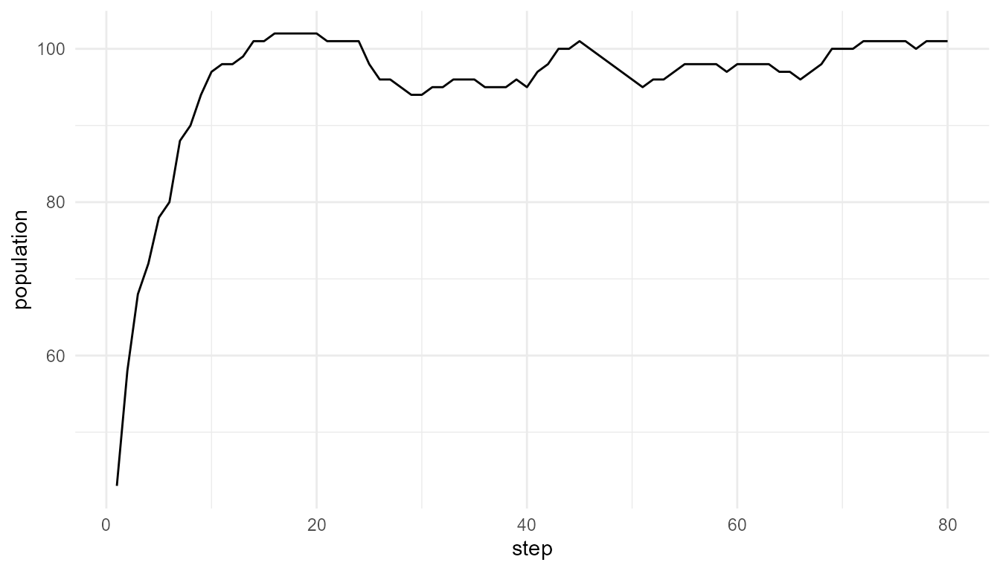
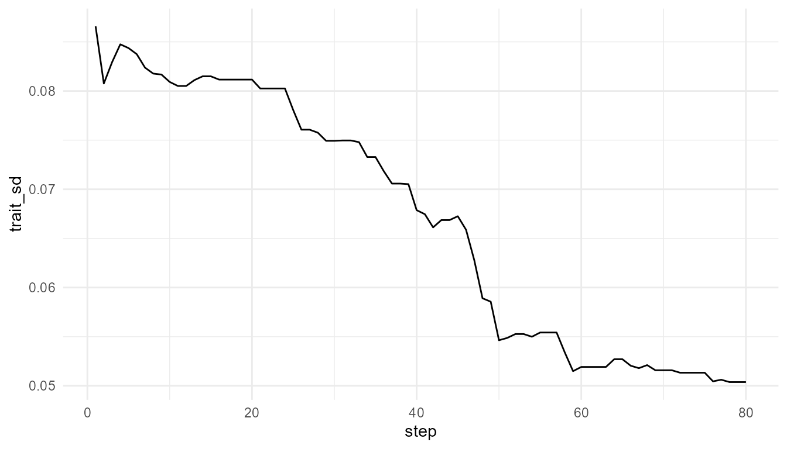
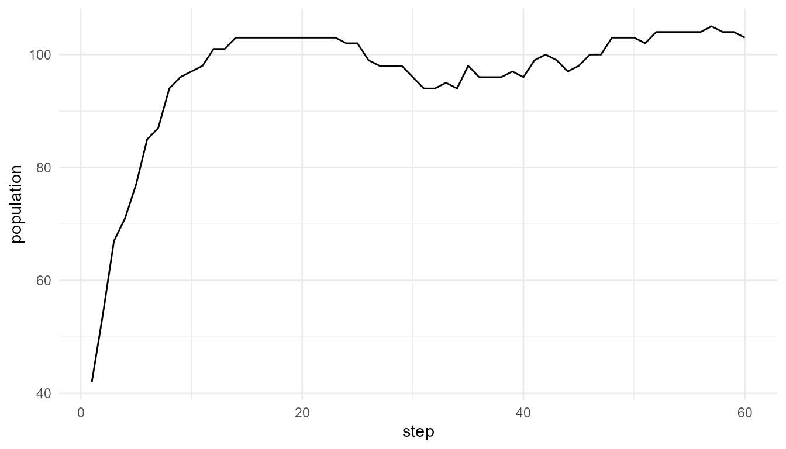
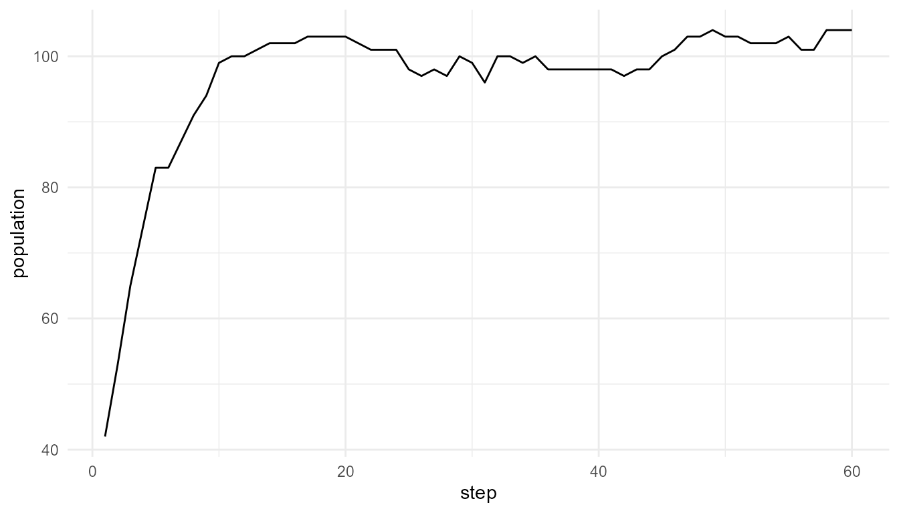

Population Dynamics and Evolvability
Source:vignettes/population-dynamics-evolvability.Rmd
population-dynamics-evolvability.RmdPurpose
This article explains population dynamics and evolvability in artificial-life models. Population dynamics describe how population size and composition change over time. Evolvability refers to a system’s capacity to generate heritable variation that can support adaptive change (Kauffman 1993; Nowak 2006).
The purpose of this chapter is to show how birth, death, resources, mutation, selection-like processes, and environmental constraints combine to produce population-level patterns.
The guiding question is:
How do birth, death, resources, mutation, and selection combine into population-level dynamics?
Population dynamics as system-level patterns
Population size is a system-level outcome. It emerges from many individual events. Each agent may gain energy, lose energy, reproduce, mutate, or die. When many agents follow these rules over time, the population as a whole may grow, decline, fluctuate, or stabilize.
No single agent controls the population curve. The curve is a summary of many local processes.
This is why population dynamics are important in artificial life:
Population-level patterns arise from repeated individual-level events.
A population curve is therefore not only a number. It is a system-level trace of the underlying model rules.
Why population dynamics matter in artificial life
Artificial-life models often aim to explore how life-like systems persist and change. Population dynamics are central because life-like organization is not only about individual agents. It is also about continuity across time.
A population can:
- grow when reproduction exceeds death;
- decline when death exceeds reproduction;
- stabilize near environmental limits;
- fluctuate when resources or survival conditions change;
- change composition when some traits become more common;
- lose diversity when variation is too low;
- become unstable when variation or pressure is too high.
These patterns help learners connect individual rules to population-level consequences.
What is evolvability?
Evolvability is the capacity of a system to generate heritable variation that can support adaptive change.
It is not the same as variation alone. A system may vary randomly without preserving useful changes. It is also not the same as inheritance alone. A system may preserve traits without generating novelty.
Evolvability depends on a balance among several processes:
| Process | Role in evolvability |
|---|---|
| Inheritance | Preserves continuity across generations |
| Mutation | Introduces variation and novelty |
| Selection | Changes which traits become more common |
| Resources | Create constraints and opportunities |
| Population size | Affects diversity and persistence |
| Environment | Determines which traits are useful |
Artificial-life models can help learners explore this balance.
Relation to the package
The function simulate_population_dynamics() provides a
simplified way to explore population-level change.
| Argument | Conceptual meaning |
|---|---|
initial_population |
Starting number of agents |
steps |
Number of time steps |
carrying_capacity |
Environmental limit on population growth |
resource_level |
Availability of resources |
mutation_rate |
Frequency of trait variation |
selection_strength |
Strength of selection-like pressure |
seed |
Reproducibility |
The output usually includes a summary table showing how population size and trait variation change over time.
Basic example
pop <- simulate_population_dynamics(
initial_population = 40,
steps = 80,
carrying_capacity = 120,
resource_level = 1.0,
seed = 7
)
head(pop$summary)
#> step population mean_energy mean_efficiency trait_sd
#> 1 1 43 1.166405 0.5135097 0.08657832
#> 2 2 58 1.016169 0.5250860 0.08075976
#> 3 3 68 1.009598 0.5286486 0.08292485
#> 4 4 72 1.067800 0.5226887 0.08474919
#> 5 5 78 1.078918 0.5197278 0.08436568
#> 6 6 80 1.117146 0.5210127 0.08374479Plot population size
plot_alife_sim(
pop$summary,
x = "step",
y = "population",
type = "line"
)
Interpretation
The population changes over time because agents gain energy, lose energy, reproduce, mutate, and die. The population curve is therefore an emergent summary of lower-level rules.
A careful interpretation is:
The plot shows population-level change in a simplified artificial-life model.
An overstatement would be:
The plot fully represents real population biology.
The first statement is appropriate. The second is too strong.
Population size is not the whole story
Population size is important, but it does not describe everything. Two populations may have the same size but very different trait diversity, energy distributions, or evolutionary potential.
For example:
- a large population may have low variation;
- a small population may contain diverse traits;
- a stable population may still be changing internally;
- a growing population may be losing diversity;
- a declining population may still contain useful variation.
This is why population dynamics should be interpreted together with trait summaries.
Trait variation over time
If the summary includes trait variation, such as
trait_sd, it can help show whether the population is
becoming more or less diverse.
if ("trait_sd" %in% names(pop$summary)) {
plot_alife_sim(
pop$summary,
x = "step",
y = "trait_sd",
type = "line"
)
}
Interpretation of trait variation
Trait variation is important because it provides the raw material for selection-like change. If variation disappears completely, the population may become less able to respond to future environmental changes.
However, variation alone is not enough. Variation must be connected to inheritance, survival, reproduction, and environmental constraint before it becomes relevant to evolvability.
Mutation rate comparison
Mutation rate can influence trait diversity and population outcomes. Compare a low mutation rate with a higher mutation rate.
low_mutation <- simulate_population_dynamics(
initial_population = 40,
steps = 60,
mutation_rate = 0.01,
seed = 8
)
high_mutation <- simulate_population_dynamics(
initial_population = 40,
steps = 60,
mutation_rate = 0.30,
seed = 8
)
data.frame(
scenario = c("low mutation", "high mutation"),
final_population = c(
tail(low_mutation$summary$population, 1),
tail(high_mutation$summary$population, 1)
),
final_trait_sd = c(
tail(low_mutation$summary$trait_sd, 1),
tail(high_mutation$summary$trait_sd, 1)
)
)
#> scenario final_population final_trait_sd
#> 1 low mutation 103 0.0926183
#> 2 high mutation 104 0.0965734Interpretation of mutation rate
Mutation rate can influence how much novelty enters the population.
A low mutation rate may preserve continuity but introduce little novelty. A high mutation rate may introduce more variation but may also disrupt inherited structure.
More mutation is not automatically better. Evolvability often depends on a balance between stability and novelty.
A careful interpretation is:
Mutation rate changes the amount of variation introduced into the artificial population.
An overstatement would be:
A higher mutation rate always makes the population more adaptive.
Plot mutation comparison
plot_alife_sim(
low_mutation$summary,
x = "step",
y = "population",
type = "line"
)
plot_alife_sim(
high_mutation$summary,
x = "step",
y = "population",
type = "line"
)
Interpretation of mutation plots
The two plots show how population size changes under different mutation rates. Differences between them may reflect how mutation influences survival, reproduction, and trait variation in the model.
The plots should be interpreted together with the summary table. A population may have a similar final size but different trait diversity.
Carrying capacity
Carrying capacity represents a soft environmental limit. It prevents unlimited growth and introduces density-dependent constraint.
small_capacity <- simulate_population_dynamics(
initial_population = 40,
steps = 60,
carrying_capacity = 60,
seed = 9
)
large_capacity <- simulate_population_dynamics(
initial_population = 40,
steps = 60,
carrying_capacity = 160,
seed = 9
)
data.frame(
scenario = c("small capacity", "large capacity"),
max_population = c(
max(small_capacity$summary$population),
max(large_capacity$summary$population)
),
final_population = c(
tail(small_capacity$summary$population, 1),
tail(large_capacity$summary$population, 1)
)
)
#> scenario max_population final_population
#> 1 small capacity 51 50
#> 2 large capacity 135 130Interpretation of carrying capacity
Carrying capacity limits population growth. A smaller carrying capacity may constrain population size earlier. A larger carrying capacity may allow greater growth before constraints become strong.
This illustrates a key principle:
Population dynamics depend on environmental limits, not only on agent traits.
A trait that is useful in one environment may be less useful in another. Environmental context shapes population outcomes.
Resource level
Resource availability can also shape population dynamics. A resource-rich environment may support growth, while a resource-poor environment may increase pressure on agents.
low_resource <- simulate_population_dynamics(
initial_population = 40,
steps = 60,
resource_level = 0.50,
seed = 10
)
high_resource <- simulate_population_dynamics(
initial_population = 40,
steps = 60,
resource_level = 1.50,
seed = 10
)
data.frame(
scenario = c("low resource", "high resource"),
max_population = c(
max(low_resource$summary$population),
max(high_resource$summary$population)
),
final_population = c(
tail(low_resource$summary$population, 1),
tail(high_resource$summary$population, 1)
)
)
#> scenario max_population final_population
#> 1 low resource 78 76
#> 2 high resource 107 106Interpretation of resource level
Changing resource level changes the environmental conditions. If resources are scarce, agents may struggle to survive and reproduce. If resources are abundant, the population may grow more easily.
However, abundant resources do not guarantee unlimited growth, especially when carrying capacity, mutation, or selection-like rules are also active.
Selection strength
Selection strength controls how strongly trait differences influence survival or reproduction in a simplified way.
agents_for_selection <- create_agents(
n_agents = 80,
seed = 13
)
weak_filter <- simulate_selection(
agents_for_selection,
survival_fraction = 0.80,
stochastic = FALSE,
seed = 13
)
strong_filter <- simulate_selection(
agents_for_selection,
survival_fraction = 0.20,
stochastic = FALSE,
seed = 13
)
data.frame(
scenario = c("weak filter", "strong filter"),
n_agents_remaining = c(
nrow(weak_filter),
nrow(strong_filter)
),
mean_efficiency = c(
mean(weak_filter$efficiency),
mean(strong_filter$efficiency)
),
mean_fitness = c(
mean(weak_filter$fitness),
mean(strong_filter$fitness)
)
)
#> scenario n_agents_remaining mean_efficiency mean_fitness
#> 1 weak filter 64 0.5153416 0.5208075
#> 2 strong filter 16 0.6316904 0.6845096Interpretation of selection strength
Selection-like pressure can change population composition. Stronger selection may reduce variation if only certain traits persist. Weaker selection may allow more variation to remain.
However, selection strength should not be interpreted as a complete representation of real natural selection. It is a simplified teaching parameter.
Evolvability as balance
Evolvability depends on balance. A population needs enough continuity to preserve useful traits and enough variation to explore new possibilities.
| Condition | Possible consequence |
|---|---|
| No inheritance | Useful changes are not preserved |
| No variation | Selection has little to work with |
| Too much mutation | Stable inheritance may be disrupted |
| Too little mutation | Novelty may be limited |
| No selection | Traits may not become directionally organized |
| Excessive selection | Diversity may collapse |
| No environmental constraint | Population dynamics may be unrealistic |
This balance is why evolvability is more than mutation alone.
Population dynamics and emergence
Population dynamics are emergent because they summarize many lower-level processes.
| Lower-level process | Population-level consequence |
|---|---|
| Energy gain | Increased survival or reproduction potential |
| Energy loss | Increased risk of death |
| Reproduction | Population growth and continuity |
| Mutation | Trait variation |
| Selection-like pressure | Trait frequency change |
| Carrying capacity | Growth limitation |
| Resource level | Environmental support or constraint |
The population curve is therefore a system-level pattern generated by local rules and constraints.
What the model captures
The model captures several important ideas:
- population size changes over time;
- resources and carrying capacity constrain growth;
- mutation can influence variation;
- selection-like pressure can affect trait composition;
- population-level patterns arise from individual-level rules;
- evolvability depends on continuity, variation, and constraint.
These features make the model useful for teaching artificial-life concepts.
What the model does not capture
The model is intentionally simplified. It does not include:
- real genetics;
- real metabolism;
- real ecology;
- development;
- spatial population structure in detail;
- demographic stochasticity in full detail;
- real evolutionary history;
- speciation;
- complex life cycles;
- laboratory origin-of-life mechanisms.
It is a toy model for conceptual exploration, not a full biological model.
Responsible interpretation
Population dynamics in this package are simplified. They do not model real ecosystems, genetics, development, or population biology. They are useful for teaching how individual rules can generate population-level change.
It is better to say:
The simulation illustrates simplified population-level dynamics.
than:
The simulation fully models biological evolution.
It is better to say:
Evolvability depends on continuity, variation, selection-like processes, and constraints.
than:
Mutation alone explains adaptation.
Careful interpretation preserves the educational value of the model without overstating it.
Educational use
This chapter can support several classroom or self-study questions:
- Why is population size a system-level outcome?
- How does carrying capacity constrain growth?
- How does resource level affect survival and reproduction?
- How does mutation rate affect trait variation?
- Why is more mutation not always better?
- How does selection strength affect diversity?
- What makes a system evolvable?
- What does this model leave out?
These questions help learners connect artificial-life simulations to broader ideas in evolution, complexity, and origin-of-life research.
Key takeaway
Population dynamics connect individual artificial agents to system-level patterns. Population size, trait variation, and adaptation-like change emerge from birth, death, resource use, mutation, selection-like pressure, and environmental constraint.
Evolvability depends on continuity, variation, selection, and
constraint. artificialLifeR provides simplified models that
make these relationships visible and teachable while preserving the
distinction between toy simulations and real biological evolution.